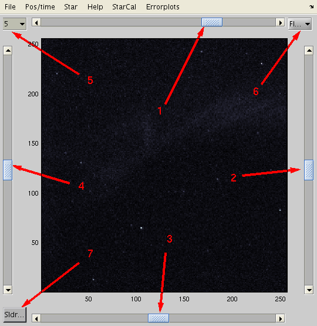

AIDA-tools, and the star calibration is flexible in the sense that it is possible to do geometric calibration of image data in several formats (both data format and formats of the meta-data.) To make the geometric calibration/star-calibration in AIDA-tools play nicely with image-data the image reading function needs to give sufficient "meta-data" about the image. Since the positions of the stars (azimuth and zenith angles) is used to determine the camera rotation and the field-of-view the meta data has to provide information about the location where the imager was located and the time and date of the exposure.
To show how to set everything up for calibration of an ASK imager an anotated and illustrated example is shown here.
>> files12 = '20120124193524r1.txt';
>> ASK_read_vs(1,files12)
ans =
videodir: '/stp/raid2/ask/data'
HDIR: '/export/data/bjg1c10/ASK/'
vsel: 1
vcam: {'ASK #1' 'ASK #2' 'ASK #2'}
vdir: {'20120124193524r1' '20061214231327r2' '20061214231327r2'}
vname: {'images-' 'image-' 'image-'}
vmjs: [1.9586e+09 1.7973e+09 1.7973e+09]
vnf: [1 1 1]
vnstep: [1 1 1]
vnl: [19200 38400 38400]
vres: [0.03125 0.03125 0.03125]
vftr: {'6730' '7320' '7320'}
vlat: [78.153 69.58 69.58]
vlon: [16.029 19.22 19.22]
vcnv: [3x8 double]
dimx: [256 256 256]
dimy: [256 256 256]
vtyp: {'askv8' 'ask' 'ask'}
vdrk: {'nodark' '20061214231302d2.dark' '20061214231302d2.dark'}
vflt: {'noflat' 'noflat' 'noflat'}
The starcal program in general takes a filename (full or relative path) of the image to use for calibration, and an optional structure with preprocessing directives. However, ASK_read_v takes the index/number in the Megablock (20120124193524r1) of the frame to read, so here things has to be done slightly differently. So:
>> PO = typical_pre_proc_ops('none')
PO =
filetype: ''
quadfix: 0
quadfixsize: 0
replaceborder: 0
badpixfix: 0
outimgsize: 0
medianfilter: 0
defaultccd6: 0
bias_correction: 0
bzero_sign: 0
imreg: []
C_cam: []
remove_these_stars: []
optpar: []
size_r_t_s: 2
v_interf_notches: []
psf: []
ffc: []
fix_missalign: 0
verb: 0
interference_level: Inf
interference_method: 'flat'
interference_swf: 3
img_histeq: 0
hist_crop: 0
try_to_be_smart_fnc: ''
log2obs: ''
read_data_fcn: ''
find_optpar: 0
StarCalResDir: '/export/data/bjg1c10/ALIS/stdnames/2002/03/10/20'
(The PO structure contains a number of fields controling the preprocessing of images as they are read in with the inimg.m function, and some fields more directly related to star/geometric calibration. These are optpar and StarCalResDir. The latter points to the directory where the calibration results will be saved.
To make starcal read ASK images we need to use the flexibility of starcal, by giving it instructions to use the ASK_read_v function.
>> PO.read_data_fnc = @(filename) ASK_read_v(16,[],[],[]);
Meta data needs to be handles too, so...
>> PO.try_to_be_smart_fnc = @(filename)anything2obs(filename,16,...
'xyz',[0,0,0],...
'longlat',[16.029,78.153],...
'station',12,...
'time',[2012,1,24,19,35,24],...
'filter',6730,...
'dt',1/32,...
'optpar',[vs.vcnv(vs.vsel,:),11,0]);
In the above the fields longlat, time and optpar are needed, the second input argument, 16 is the frame numer we're reading with with PO.read_data_fcn, and with the dt field set to 1/32 s, the observation time will be steped forward 16*1/32 s. longlat is the longitude and latitude of the observation location, and time is the start time of the mega-block from which we calculate the exposure time of the frame. If the optpar field is set starcal uses that as the start guess for the camera field-of-view.
>> PO.SAO = 1;
>> SkMp = starcal('20120124193524r1-frame16',PO);
(Here it should be noted that the output variable from starcal should be litteral "SkMp" for programming reasons. The starcal graphical user interface needs the output to be SkMp because many GUI callback functions have an input argument that should be the output variable from "starcal" - and in those callback calls this variable name is set to SkMp inside starcal. This is a bit clunky, but it works.)
This brings up 3 figure windows, one with the main graphical interface with the stars overlayed over the image and four sliders and 3 pop-up menus for controlling the calibration: Image display  Here the sliders, menus and buttons control:
Here two things are obvious: 1, there are no stars brighter than magnitude 5 inside the current assumed field-of-view, the image is a bit faint. To improve the image signal-to-noise it is possible to add up a number of frames and put that image in place of the one read in:
>> D = 0;
>> for i1 = 1:32;
img_out = ASK_read_v(i1,[],[],[],ops);
D = D+img_out/32;
end
>> SkMp.img = D;
...and then change the faintest star magnitude to 8.5. This
should make the figure look something like this:
starcal keeps the intensity range fixed, so to brighten the display it might be good to lower the upper limit by either setting it explicitly with caxis or with imgs_smart_caxis
With a decent to good initial guess of the optical parameters this should be very straightforward to do the identification of stars in the image and associate them with their corresponding stars from the star catalog - it is just to follow the steps described in starcal. After identifying a few stars the figure might look like this:
To get the optimally adjusted optical parameters it is just to select the "Search optpar" menu item in the "Starcal" menu and push the search optpar button in the figure that is created. The search is done with "fminsearch" function. After that has finished, and the "plot id-stars" menu item is selected the fit between the overlayed stars from the catalog and the stars should match up well:
After this one can chose to run the "semiautoidentification" to identify many more stars, or directly save the current optical parameters - either to file by chosing the "save optpar" menu item, or manually extract them for further manipulations (writing into a cameraN.lut for example) by:
>> optp = SkMp.optpar
To repeat all matlab commands necessary to produce a working starcal in initialized state, this is what is needed for ASK:
>> if 1
files12 = '20120124193524r1.txt';
ASK_read_vs(1,files12)
global vs
frameNR = 16;
PO = typical_pre_proc_ops('none');
PO.SAO = 1;
PO.frame = frameNR;
PO.read_data_fcn = @(filename)read_ASKimgs(filename,PO);
PO.try_to_be_smart_fnc = @(filename)anything2obs(filename,frameNR,...
'xyz',[0,0,0],...
'longlat',[16.029,78.153],...
'station',12,...
'time',[2012,1,24,19,35,24],...
'filter',6730,...
'dt',1/32,...
'optpar',[vs.vcnv(vs.vsel,:),11,0]);
SkMp = starcal('20120124193524r1-frame16.dat',PO);
D = 0;
for i1 = 1:32;
img_out = ASK_read_v(i1,[],[],[]);
D = D+img_out/32;
end
SkMp.img = D;
imgs_smart_caxis(0.001,SkMp.img) % histogram clipping of intensity range
updstrpl(SkMp) % This is just to provoke a redraw with the new image
end
{kind=link}
{kind=link}
{kind=link}
{kind=link}